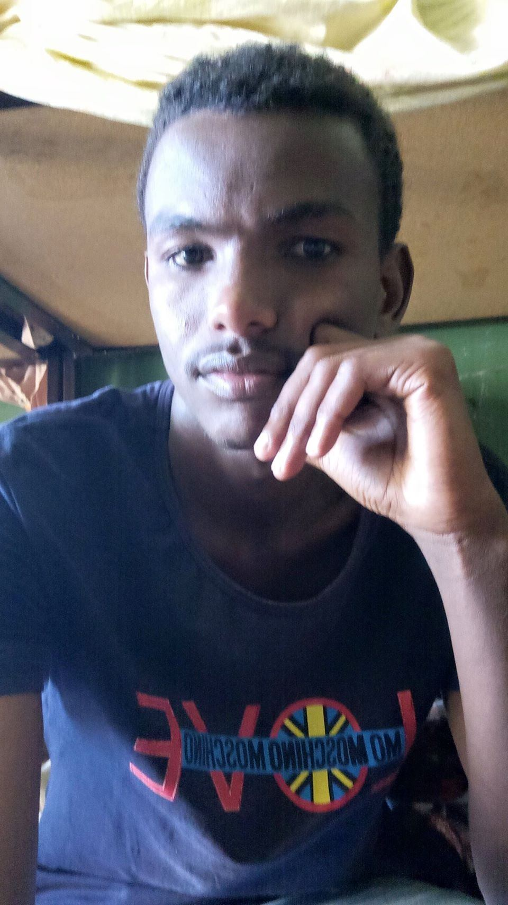

Biomedical Engineer and Researcher | Medical Imaging | AI in Healthcare
Download CVI am a Biomedical Engineer specializing in biomedical imaging, deep learning, and biosignal analysis. My research explores how artificial intelligence can improve disease diagnosis and healthcare accessibility, particularly in resource-limited settings. I hold an MSc in Biomedical Engineering (Biomedical Imaging) from Jimma University, Ethiopia.
Developed a ResNet50 deep learning model trained on locally acquired Ethiopian fundus images for early-stage common retinopathy detection.
View on GitHubAnalyzed Fourier Transform Infrared spectral data to classify benign and malignant tissue samples using machine learning models.
View on GitHubDesigned and validated a custom child monitoring bed meausuring vital signals that includes tempirature,pulse,breath rate and weight.
View on GitHubEmail: kedirjundibme@gmail.com
LinkedIn: linkedin.com/in/kedirjundi
Google Scholar: scholar.google.com
GitHub: github.com/kedirjundi